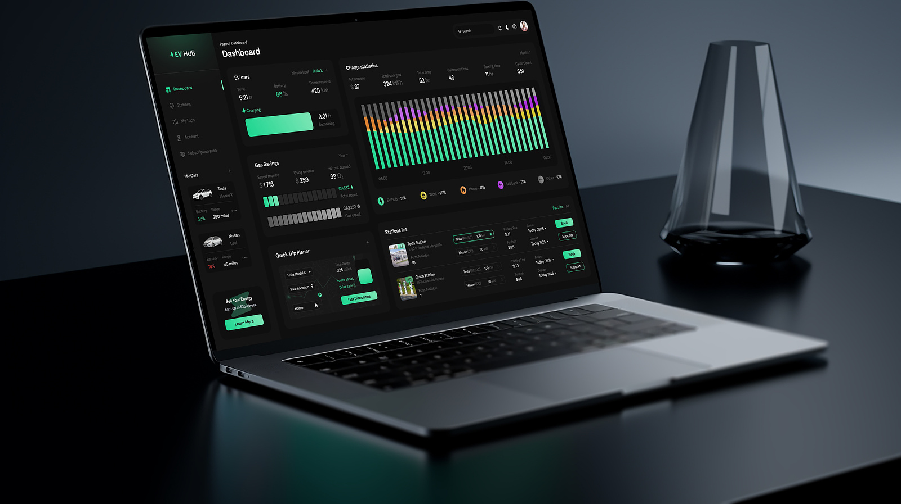

December 15, 2023
The life expectancy dataset provides valuable insights into the factors
affecting the life expectancy of individuals across different countries.
The dataset includes various dimensions such as country, year, status, GDP per capita, education, alcohol consumption, and more.
These visuals empowers decision making in areas such as healthcare, policy-making, and resource allocation to make informed choices based on these insights.
In summary, this dataset provides better understanding of the factors affecting life expectancy and supporting data-driven decision-making processes.


This Data has been collected from different hospitals, community clinics, and maternal health cares through the IoT-based risk monitoring system. It provides meaningful insights about the delivery data and helps in decision making to improve it.
The Microsoft stock analysis dataset typically contains historical stock market data related to Microsoft Corporation. This report is usefull for conducting financial and investment analysis, exploring stock market trends, and evaluating the performance of Microsoft's stock over time. This report is relevant for investment decision-making, financial performance evaluation, market trend analysis, risk management, and financial modeling. It provides valuable insights for investors, financial analysts, and portfolio managers seeking to understand and analyze the historical performance of Microsoft's stock in the stock market.

The COVID-19 NCDC dataset provides valuable insights into the spread and impact of COVID-19 in Nigeria. The COVID-19 NCDC dataset is a crucial resource for understanding the progression of the COVID-19 pandemic in Nigeria.
The shark attack dataset is a collection of data that provides information on recorded shark attacks worldwide. This dataset aims to document and analyze shark attacks to better understand their occurrence, patterns, and potential risk factors.

The Bitcoin Historical dataset is a collection of data that provides information on the historical price and trading volume of Bitcoin, a decentralized digital currency. It also provides information about price movements and trading activity of Bitcoin over time.
The dataset contains the stock prices of the 10 popular companies ( Apple, Amazon, Netflix, Microsoft, Google, Facebook, Tesla, Walmart, Uber and Zoom). The dataset provides a rich source of information for understanding the behavior of financial markets, evaluating investment opportunities, and conducting research in the field of finance and economics.

The dataset contains shopping information from 10 different shopping malls between 2021 and 2023 and provides insights into shopping trends and patterns in Istanbul.
The NYC Taxi dataset contains a wealth of information related to taxi trips in New York City. The dataset provides a comprehensive record of taxi rides, capturing a wide range of variables related to travel patterns, fare structures, and passenger behavior.

This dataset provides an in-depth look at the profitability of e-commerce sales. It contains data on a variety of sales channels, including Shiprocket and INCREFF, as well as financial information on related expenses and profits.

This dataset shows traffic to and from the Airport as a Percentage of the Traffic volume during the Covid period. Using the baseline period from 1st Feb to 15th March 2020.
December 15, 2023December 15, 2023
The Cholera Katarina dataset includes information such as cholera cases and other relevant geographical and epidemiological data. This report provides significant visuals and insights that can solve the public health crisis. This report again helps in understanding the spatial patterns of the outbreak and identifying potential correlations for easy data-driven decision making.

Brazilian eCommerce public dataset of orders made at Olist Store. The dataset has information of 100k orders from 2016 to 2018 made at multiple marketplaces in Brazil.